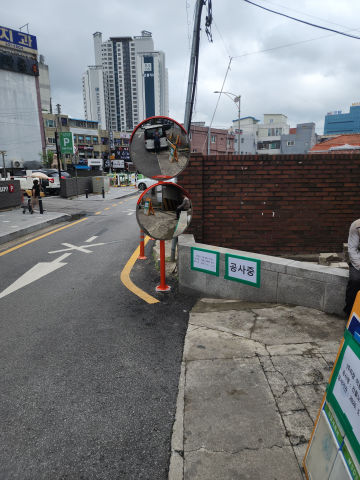

반사경 / WORK CASE
주차장 사각지대 해소를 위한 반사경 교체
차량 접촉으로 깨진 주차장 반사경을 철거하고새 반사경을 설치한 사례입니다.브라켓·지주 상태와 실제 시야각을 함께 확인해 사각지대 해소와 접촉사고 예방에 맞춰 설치 위치를 잡습니다.
광주시 탄벌동 반사경 작업은 현장 사진과 바닥·고정부 상태를 먼저 확인합니다. 주차장 코너, 건물 출입구, 골목·진입로의 사각지대를 줄이기 위한 반사경을 설치·교체합니다. 거울 재질뿐 아니라 벽부형·지주형, 지주 고정 방법과 시야 각도를 함께 봐야 합니다. 1개·소량 시공부터 기존 제품 철거, 작업 후 발생하는 폐기물 처리까지 함께 상담할 수 있습니다.

볼라드·차선규제봉·반사경·카스토퍼 등
실제 설치·교체 전후 현장을 함께 확인해 보세요.
차량 접촉으로 깨진 주차장 반사경을 철거하고새 반사경을 설치한 사례입니다.브라켓·지주 상태와 실제 시야각을 함께 확인해 사각지대 해소와 접촉사고 예방에 맞춰 설치 위치를 잡습니다.


후진 충격으로 본체와 고정부가 이탈한 카스토퍼를 철거하고 새 제품을 설치한 사례입니다.콘크리트·아스콘 등 바닥 재질에 맞는 고정 방법을 적용합니다.


들뜨고 손상된 미끄럼방지 자재를 제거한 뒤 계단 바탕을 정리하고논슬립패드를 다시 설치한 사례입니다.


파인 포장면을 정리하고 보수재를 채운 뒤 다짐과 평탄 작업을 진행한 사례입니다.반복 파손 여부와 하부 침하 가능성도 확인합니다.


지정 주차면의 무단주차를 줄이기 위해 접이식 주차금지봉을 설치한 사례입니다.접었을 때 차량 간섭과 바닥 고정 상태를 함께 봅니다.


파손된 고무 차량진입판을 철거하고 출입구 단차와 통행 폭에 맞춰 교체하는 작업입니다.기존 자재와 작업 폐기물 정리까지 범위를 함께 잡을 수 있습니다.


현장 안내가 필요한 위치에 지주형 표지판을 설치한 사례입니다.앙카식·매립식 등 바닥 조건에 맞는 고정 방식을 선택합니다.


찢어지고 들뜬 기존 코너가드를 제거하고 새 보호대를 설치한 사례입니다.기둥 바탕과 접착 상태를 확인해 재고정합니다.


차량 충돌로 꺾이거나 훼손된 기존 볼라드를 철거하고 새 제품으로 교체한 사례입니다.제품뿐 아니라 기존 고정부와 바닥 손상을 함께 확인해 재설치 범위를 정합니다.


지게차·차량에 눌린 규제봉을 부분 철거하고 새 제품을 설치한 사례입니다.베이스와 앙카가 손상됐는지 확인한 뒤 재사용 또는 교체 여부를 판단합니다.
같은 현장의 다른 시설물 작업도 함께 확인할 수 있습니다.
제품 종류와 설치 상태를 사진으로 먼저 확인하면 작업 범위를 정하는 데 도움이 됩니다.
PC반사경과 스테인리스 반사경은 무게와 충격 특성, 표면 느낌이 서로 다릅니다.실내 주차장인지 외부 도로인지, 차량이나 장비가 닿을 가능성이 있는지, 필요한 크기를 보고 제품을 정합니다.
현장에서는 도로반사경, 볼록거울, 사각지대거울, 주차장안전거울처럼 여러 이름으로 부릅니다.목적은 코너나 출입구에서 보이지 않는 구간을 미리 확인해 사각지대를 줄이고 차량·보행자 접촉을 예방하는 데 있습니다.
튼튼한 벽이나 기둥이 있고 시야각이 나오면 벽부 브라켓으로 설치할 수 있습니다.붙일 곳이 없거나 더 바깥쪽으로 위치를 빼야 하면 지주형을 검토합니다.설치 후 실제 운전자 위치에서 거울에 필요한 구간이 들어오는지 확인하는 과정이 중요합니다.
기존 콘크리트 바닥을 이용할 수 있으면 앙카식 지주가 작업이 간단한 편입니다.바닥 상태가 좋지 않거나 강한 고정이 필요한 외부 현장은 매립식이 더 맞을 수 있습니다.현장 바닥과 지주 길이를 보고 결정합니다.
지주가 휘지 않았고 브라켓과 체결부가 단단하면 거울 본체만 교체할 수 있는지 먼저 확인합니다.녹이 심하거나 흔들림이 있으면 새 거울만 달아도 다시 틀어질 수 있어 고정부까지 같이 보는 편이 좋습니다.
주차장 출입구나 코너 한 곳처럼 필요한 위치만 1개 설치하는 작업도 상담합니다.설치 전에 거울을 어느 방향으로 보게 할지와 고정할 벽·지주 위치를 먼저 확인합니다.
거울과 차량 사이 거리, 확인해야 하는 시야 폭, 차량 접근 방향을 보고 크기를 정합니다.사진 한 장보다는 운전자 쪽에서 코너가 보이도록 찍은 사진이 제품 크기와 위치를 잡는 데 더 도움이 됩니다.
광주시 탄벌동 외에도 같은 시공항목의 다른 지역 페이지를 연결해 두었습니다.
현장 전체, 파손 부위 근접, 바닥·고정부가 보이는 사진과 수량을 보내면 필요한 추가 정보부터 안내합니다.